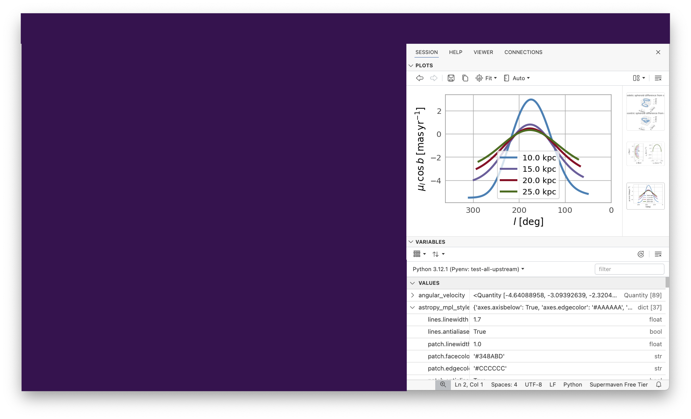

End-to-end data science with the Positron IDE
Isabel Zimmerman ~ Posit, PBC
2024-11-07
hello! üçé
@isabelizimm
@isabelizimm
/in/isabel-zimmerman
isabelizimm.me
hello, Positron
The origin story
Multi-language IDE for data science
Made by

Steps of data science
Steps of data science (in Python)
interactive console
import
connections pane
connection pane
tidy
data explorer
data explorer
transform, visualize, model
transform, visualize, model
understand
variables pane
variables pane
variables pane
help pane
help pane
help pane
plots pane
plots pane
plots pane
communicate
viewer pane
viewer pane
viewer pane
What else?
Updating Jupyter Notebook experience
Early stage project, but ready for real work
How can I use Positron?
Available on GitHub @
https://github.com/posit-dev/positron
Documentation @
https://positron.posit.co/
thank you! üëã